阅读词表
| 词条 | 拼音 | 类型 | 说明 |
|---|---|---|---|
| 莘 | shēn | place | 古国名用字；文中莘国读shēn。 |
| 姒 | sì | manual | 古代姓氏用字；文中大姒及莘国为姒姓。 |
| 奭 | shì | person | 召公名；召公奭是西周初年重要政治人物。 |
| 窖穴 | jiào xué | concept | 地下储藏坑穴。 |
| 殷墟 | yīn xū | site_or_culture | 晚商都邑遗址，甲骨卜辞的重要出土地。 |
| 缵 | zuǎn | manual | 承接并继续；“缵女维莘”中指接连娶莘国女子。 |
| 鬻 | yù | person | 人名用字；文中鬻子读yù。 |
| 肩胛骨 | jiān jiǎ gǔ | concept | 动物或人的肩部骨骼，常被加工为卜骨。 |
| 人祭 | rén jì | concept | 以人作为祭品的祭祀行为。 |
| 燮 | xiè | manual | 调和、协和；“燮伐大商”中读xiè。 |
| 人奠基 | rén diàn jī | concept | 建筑奠基时以人作为牺牲的行为。 |
| 奠基 | diàn jī | concept | 建筑开始时的基础工程或相关仪式。 |
| 夯土台基 | hāng tǔ tái jī | 项目词典 | 用夯土筑成的高台式建筑基础。 | 用夯土筑成的建筑台基。 |
| 文王大宅 | wén wáng dà zhái | 项目词典 | 周原遗址中的大型西周建筑基址。 |
| 甲骨刻辞 | jiǎ gǔ kè cí | 项目词典 | 刻在甲骨上的文字记录。 |
| 甲骨卜辞 | jiǎ gǔ bǔ cí | 项目词典 | 商代刻写在甲骨上的占卜文字。 | 刻写在龟甲兽骨上的占卜文字。 | 刻写在甲骨上的占卜记录。 | 刻写在龟甲兽骨上的占卜辞句。 |
| 伯邑考 | bó yì kǎo | 项目词典 | 文王长子。 |
| 召公奭 | zhào gōng shì | shào gōng shì | 项目词典 | 周初重臣，召国始封君。 | 周初重臣，燕国始封祖。 |
| 周文王 | zhōu wén wáng | 项目词典 | 周族领袖姬昌。 |
| 周武王 | zhōu wǔ wáng | 项目词典 | 周发，灭商之君。 |
| 括地志 | kuò dì zhì | 项目词典 | 唐代地理著作，常被古书注释引用。 |
| 盘龙城 | pán lóng chéng | 项目词典 | 湖北武汉附近早商城址，是商朝南方重要据点。 | 湖北武汉附近早商城址，文中作为商朝南方据点。 |
| 碳十四 | tàn shí sì | 项目词典 | 利用放射性碳测定年代的方法。 |
| 老牛坡 | lǎo niú pō | 项目词典 | 西安附近商代遗址，文中涉及商人据点和人祭。 | 陕西西安商代遗址。 |
| 上帝 | shàng dì | 项目词典 | 商周宗教中的最高神。 |
| 人牲 | rén shēng | 项目词典 | 被用于祭祀的人。 | 被用于祭祀或献祭的人。 | 被杀用于祭祀的人。 |
| 分封 | fēn fēng | 项目词典 | 周初封邦建国制度。 |
| 卜辞 | bǔ cí | 项目词典 | 甲骨占卜后刻写或记录的辞句。 | 甲骨上记录占卜的文字。 | 占卜时刻写或记录的辞句。 |
| 周公 | zhōu gōng | 项目词典 | 周公旦，武王之弟。 | 周公旦，周初政治家。 |
| 周原 | zhōu yuán | 项目词典 | 关中地区周族的重要活动中心。 | 关中地区周族重要遗址和活动中心。 | 周族核心区域。 |
| 周昌 | zhōu chāng | 项目词典 | 周文王姬昌，书中常称周昌。 | 周文王姬昌。 | 周文王之名。 |
| 商族 | shāng zú | 项目词典 | 商王朝建立前后的族群共同体。 |
| 商汤 | shāng tāng | 项目词典 | 商朝开国君主，传统记载中灭夏。 |
| 商王 | shāng wáng | 项目词典 | 商朝王。 |
| 基址 | jī zhǐ | 项目词典 | 建筑物遗留下来的基础位置。 |
| 壁龛 | bì kān | 项目词典 | 墙壁或坑壁上凿出的供放置物品的小龛。 |
| 夯土 | hāng tǔ | 项目词典 | 把土层层夯实形成建筑基础或城墙的技术。 |
| 尚书 | shàng shū | 项目词典 | 儒家经典之一，文中引用《盘庚》篇。 | 保存上古政治文献和诰命的儒家经典。 |
| 局促 | jú cù | 项目词典 | 狭小、不舒展。 |
| 巫术 | wū shù | 项目词典 | 古代借助神秘仪式影响现实的信仰行为。 | 借助神秘仪式影响现实的信仰行为。 |
| 帝辛 | dì xīn | 项目词典 | 商纣王的王名。 |
| 成王 | chéng wáng | 项目词典 | 周成王，武王之子。 |
| 无逸 | wú yì | 项目词典 | 《尚书》篇名。 |
| 易经 | yì jīng | 项目词典 | 文王卦爻辞体系，书中用以讨论翦商谋略。 | 文王卦爻辞体系。 | 以六十四卦及卦爻辞为主体的古代经典。 |
| 构拟 | gòu nǐ | 项目词典 | 根据材料推想、重建原貌。 |
| 武王 | wǔ wáng | 项目词典 | 周武王。 |
| 殉葬 | xùn zàng | 项目词典 | 以人或物随葬。 |
| 殷商 | yīn shāng | 项目词典 | 商朝后期文化和政权。 | 商代后期以殷墟为中心的商王朝阶段。 |
| 殷都 | yīn dū | 项目词典 | 商朝后期都城区域，今安阳殷墟一带。 | 商朝后期都城区域。 | 晚商都城，通常指安阳殷墟。 |
| 江汉 | jiāng hàn | 项目词典 | 长江与汉水流域一带。 |
| 燕国 | yān guó | 项目词典 | 西周诸侯国。 |
| 爻辞 | yáo cí | 项目词典 | 解释每一爻吉凶和意义的文字。 |
| 献祭 | xiàn jì | 项目词典 | 把祭品奉献给神灵或祖先。 | 向神灵、祖先等奉献祭品。 |
| 玄鸟 | xuán niǎo | 项目词典 | 商族起源神话中的神鸟或天命媒介。 |
| 祭品 | jì pǐn | 项目词典 | 祭祀时献给神灵或祖先的物品。 |
| 粟米 | sù mǐ | 项目词典 | 小米；北方旱作农业的重要作物。 |
| 纣王 | zhòu wáng | 项目词典 | 商朝末代王帝辛。 | 商末王，文中讨论其暴虐和人祭。 |
| 翦商 | jiǎn shāng | 项目词典 | 周人剪灭商朝的政治行动。 | 剪除商朝，文中为全书核心主题。 |
| 肢解 | zhī jiě | 项目词典 | 将肢体切割分解。 |
| 西土 | xī tǔ | 项目词典 | 周族所在的西方地区。 |
| 诗经 | shī jīng | 项目词典 | 中国古代诗歌总集，儒家经典之一。 |
| 酋长 | qiú zhǎng | 项目词典 | 部落或地方共同体的首领。 |
| 铜鼎 | tóng dǐng | 项目词典 | 青铜鼎，古代炊煮或礼仪重器。 | 青铜鼎，礼器或炊器。 |
| 铭文 | míng wén | 项目词典 | 铸刻在青铜器等器物上的文字。 | 器物上铸刻或刻写的文字。 |
| 镐京 | hào jīng | 项目词典 | 西周都城。 |
| 长平 | cháng píng | 项目词典 | 秦赵长平之战所在地。 |
青铜器词表
| 器名 | 拼音 | 类型 | 说明 |
|---|---|---|---|
| 彝 | yí | bronze_item | 古代盛酒器，也泛指宗庙祭器。 |
章节导读札记
| 主题 | 札记 | 操作 |
|---|---|---|
| 暂无章节导读札记 | ||
用户札记
| 类型 | 页 | 内容 |
|---|---|---|
| 暂无用户札记 | ||
原书阅读器页 341原书物理 PDF 页 339印刷页 327
第十七章周文王地窖里的秘密
上古时代的历史人物的家宅，极少有机会被发掘到，或者即使发掘到了，也缺乏相应的记载。比如，殷墟发掘了很多宫殿基址，但我们无法确定商王们到底居住在哪座建筑。即便是秦皇汉武、唐宗宋祖，我们也无法指认他们住在遗址建筑的哪间殿堂。
只有周文王是特例。1976年，他居住的宅院被完整地发掘了出来，而且有甲骨卜辞为证。这座宅院不仅展示了周族首领的生活空间，还隐藏着文王的惊天秘密：和诸神共谋的翦商事业。
让我们从青年时代的文王开始。
文王是纣王的姑父？
渭河上喧嚣了起来，很多条小木船被系在河中，上面铺有木板，一座浮桥就这样搭了起来。青年族长周昌，后来的周文王，带领着族人在渭河边迎接从东方远道而来的新娘，隆重地宣扬这场婚姻带来的荣耀。新娘来自姒姓的莘国，后人称为“大姒”。
《诗经•大明》曰：“文王初载，天作之合。”这是上帝（天）亲自撮合的婚事，而这位来自大国的女子简直就像是天帝的妹妹：“大邦有子，何天之妹。”文王晚年创作的《易经》有两个卦的爻辞出现了“帝乙归妹”，意思是时任商王帝乙（纣王之父）下嫁了妹妹：“帝乙归妹，以祉元吉。”按照这种说法，文王成了帝乙的妹夫，纣王的姑父。
不过，这显然不是事实，因为姒姓并非商朝王族，更不可能是商王帝乙的妹妹，估计周人自己也不会当真。那么，大姒的莘国在何处？有旧说是今陕西省合阳县，但未必成立，因为合阳县和周原都在渭河北岸，往返不需要渡过渭河。莘国应当和挚国类似，也在河南地区，新娘的车队从豫西古道驶向关中，然后向北渡过渭河，才抵达周原。[[fn:1]]
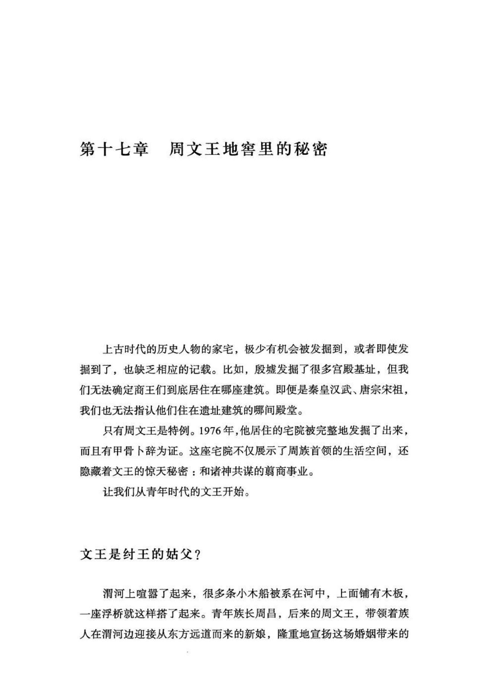
原书阅读器页 342原书物理 PDF 页 340印刷页 328
莘国姒姓，据说是夏王室后裔。这个小国似乎以女子著称。商代开国君王商汤的夫人出自莘国，再后来，周昌被商纣王囚禁，臣僚们为营救主公，搜罗各种名贵礼物进献商纣，其中就“有莘氏美女”。也许正是文王的夫人出自莘国，才引发了后来各种附会的历史创作。
和文王母亲的挚国相比，莘国的知名度更高一点。这也是周族势力上升的体现，它已经是西土一个颇有前途的新兴小邦国。莘国嫁来的有姐妹两个，所谓“缵女维莘”。“缵”，连续、不止一个之意。周昌还暗中怀疑，好像姐姐的衣服不如妹妹高级：“帝乙归妹。其君之袂，不如其娣之袂良。”（《易经》归妹卦六五）妹妹可能嫁给了周族另一个重要人物召公奭。召公奭的年龄比周昌小，在周昌晚年以及武王的灭商事业中，作用非常重要，他的头衔是“太保”，意为“国君的监护人”。
商周时代，职位多是世袭。召公奭的父亲可能辅佐过少年周昌，才使自己的家族得到了“太保”的殊荣。正如前文所述，周昌童年丧父，过早地登上了族长之位，[[fn:2]] 应当有长者替他管理周族事务，召氏家族的可能性很大。
召公家族虽也是姬姓，但和周昌家族似乎没有太近的亲缘，至少史书中没有这方面的记载。[[fn:3]] 武乙王时期的卜辞经常出现讨伐“刀方”的记载，陈梦家认为刀即是“召”，[[fn:4]] 本书推测，“刀方”可能是召公所属的召部族，他们因遭受来自商人的沉重打击，侥幸残存的成员（如召公奭的祖父辈）后来投靠了周族。这位没能进入史书的召公奭之父，这里可以暂时称其为“召祖”。
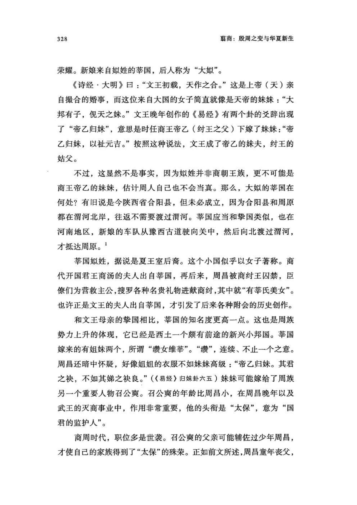
原书阅读器页 343原书物理 PDF 页 341印刷页 329
召氏有和商人长期作战的经验，召祖也比较熟悉商朝的情况，并辅佐少年周昌直到成年。周昌的婚事很可能也是召祖奔走操办的，还顺便给自己的儿子、后来的召公奭娶了一位莘国公主。周昌因此又和召公奭成了连襟。
《易经》归妹卦显示，妹妹的嫁妆似乎更丰厚。也许是因为她在娘家更受宠爱，也许是因为召祖在周族“辅政”多年，女方家族更重视这位实权人物。来自东方的新娘也造成了召公奭家族的某种商化，比如，他或者他的孩子就有名“辛”的，而用生日的天干作为名字是商人的习俗。[[fn:5]]
结婚后的周昌很快便开始“亲政”，新一代周族人的历史就此开启。
和父亲季历相比，周昌的夫妻生活要幸福得多。这部分是因为周族上层已逐步商化，族长家也阔绰起来，有了体面的大宅院，族长夫人已不用再把猪圈当厕所。
周昌这一代的首领和东方贵族的交流已经没有大的障碍。他以多子著称，有所谓“文王百子”之说。仅他和大姒生下的儿子就有十个左右，此外，还可能有几个庶出的儿子，但没有任何女儿的信息。
商王帝乙可能在位二十六年，[[fn:6]]然后由儿子帝辛继任，这便是末代商王纣。他名为“受”，也称“辛受”。“纣”可能是后世周人给他的贬义称呼。
这一次商王更迭时，周昌大概三十岁稍多，而周族人最重要的工作仍是为商朝征战和捕俘。从《易经》的一些内容来看，周昌年轻时经常带领族人远征羌戎部落，积累了很多捕俘经验。不过随着儿子们逐渐长大，周昌开始脱离征战厮杀，由长子伯邑考和次子周发（后来的武王）更多地承担军事工作。
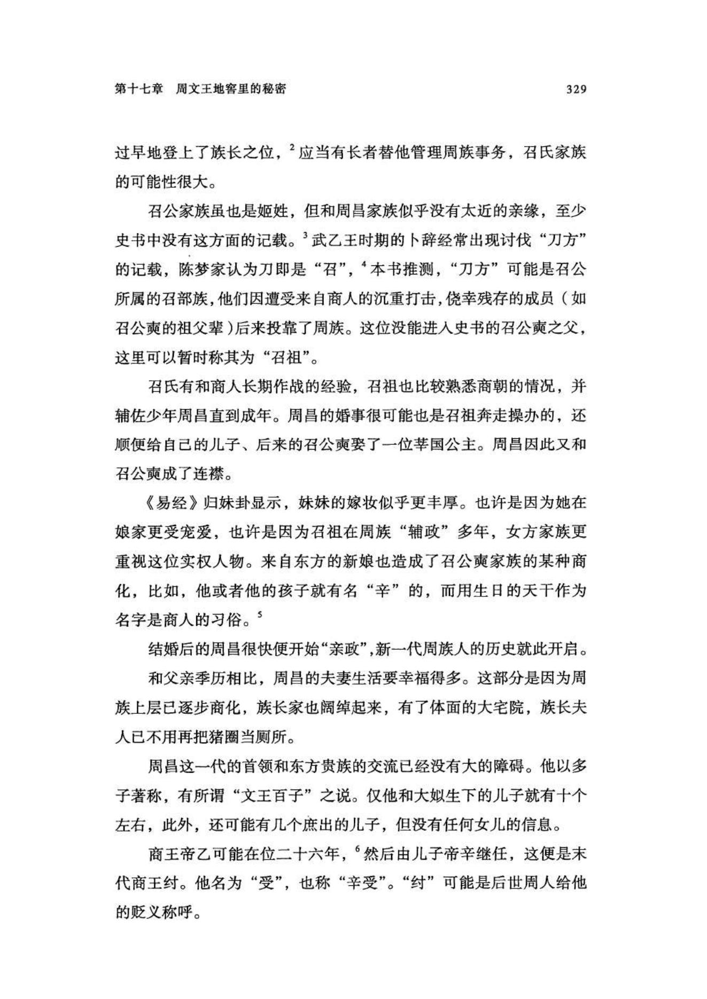
原书阅读器页 344原书物理 PDF 页 342印刷页 330
伯邑考后来死于殷都，在史书中，他的信息很少。文王诸子都是单字名，比如，武王叫发，周公叫旦，只有伯邑考的名字比较奇怪。其实，这背后有很多隐情。
他原名应该叫邑。“伯”，表示他是嫡长子，这是周人的家族排行用语（伯仲叔季）；“考”意为父亲，但伯邑考没有后嗣，实是后世周王室祭祀时对他的尊称。从这个不同寻常的称呼也可以看出来，他本应是周昌的继承人。
《诗经•大明》曰：“长子维行，笃生武王。保右命尔，燮伐大商。”这里，长子（周邑）的名字被隐去，且暗示死在了外地（维行），二弟周发这才成为周族继承人。伯邑考之死是商周关系的重要转折，让文王的翦商决心从此不可动摇。
文王是何时萌生翦商之意的，已经无法确定，但至少在他有机会去往商都之前，对商朝的认识肯定非常模糊，应该不会有明确的计划。最早开启文王想象力的，是占卜。
当儿子们能够替自己分担一些工作后，周昌便开始研究占卜、祭祀、通灵等巫术。他这方面的兴趣，最初可能来自占算捕猎羌戎的方法，诸如在何时或何地设伏。甲骨占卜技术的起源很早，从四千多年前的龙山文化开始，华北地区就已经流行用牛或羊的肩胛骨占卜吉凶。而随着研究的深入，周昌开始进入危险的禁区。
甲骨占卜的表面原理是观察骨头或龟甲上烧烫出的裂纹（兆纹），解读吉凶；但其深层原理却是通灵，即向某些特定的神灵询问神意。比如，商王会向历代先王或上帝提问，然后神的解答会表现在骨头的裂纹上。而比商王地位低的人，无权请教高级神灵，只能求助于低级的鬼神，比如自家先祖或本地土地神，乃至家里的灶神等小神。
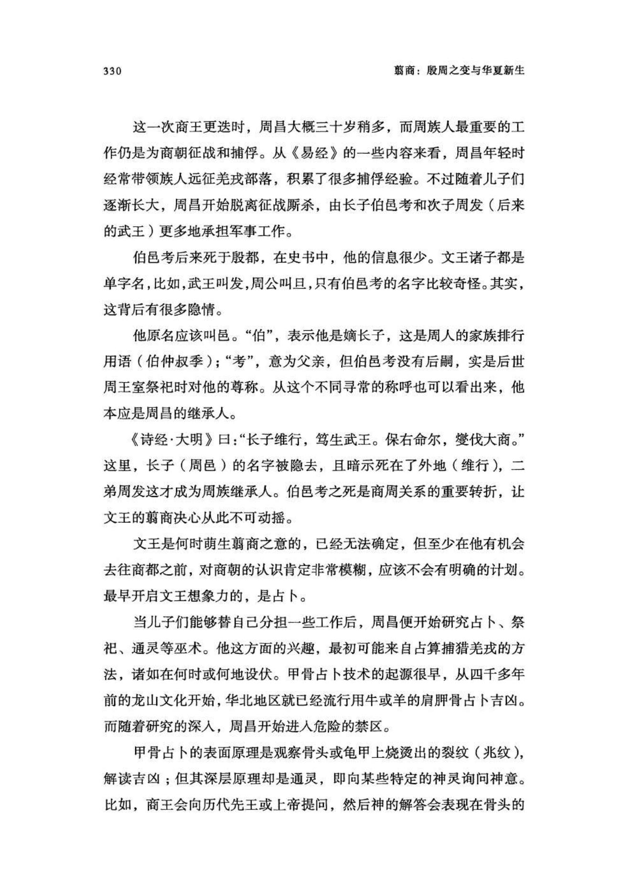
原书阅读器页 345原书物理 PDF 页 343印刷页 331
而且，普通人不能把占卜内容用文字刻写在甲骨上。殷墟发现的甲骨卜辞，绝大多数都是历代商王的，只在武丁时期有极少数的王子卜辞。这可能是商人的一种宗教观念，认为刻在甲骨上的文字可以传达给诸神，是人神沟通的唯一通道，所以严禁王之外的人采用。商朝分封在外地的重要侯国，如盘龙城和老牛坡，都没有发现刻字的占卜甲骨。
周昌还想尽办法搜罗来自商朝境内的人，以获取和利用商朝上层的占卜通神技术。《史记•周本纪》说，文王礼贤下士，为了接待外来的有才之人，经常到中午还顾不上吃饭，所以从商朝投奔他的人逐渐多了起来，有太颠、闳夭、散宜生、鬻子〔按语：鬻矛誉楯〕、辛甲大夫等人，甚至远在孤竹（据说是辽西）的伯夷和叔齐兄弟也来到了周原。不过，这些人的身份来历大都不可考，只有辛甲大夫可能是商人——因其名字中有天干，这是商人的起名习俗，但连用两个天干的也很少见。
周族首领的四合院
文王宅院位于岐山脚下的周原，今陕西省岐山县凤雏村北侧，编号为凤雏村甲组建筑基址。院落坐北朝南，东西宽32.5米，南北长45米，总面积1469平方米，相当于三个并列的标准篮球场。有三排房屋、两进庭院和东西厢房，围拢成一个标准的四合院，大门外有一堵影壁。[[fn:7]]
整个院落为夯土木结构，夯土台基厚约1.3米，墙壁厚0.6—1米，屋顶檩条上铺紧密的芦苇捆束，再抹泥构成屋顶。所有地板、墙面和屋顶都涂抹了1厘米厚的白灰砂浆，室内墙面的白灰比例略高，呈发白的浅黄色。影壁上不仅涂白灰砂浆，可能还有绘画。
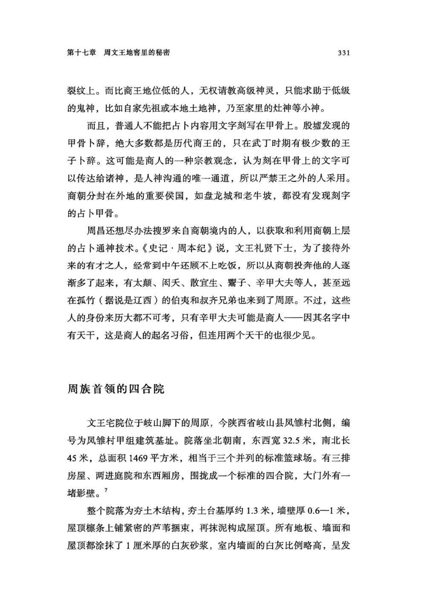
原书阅读器页 346原书物理 PDF 页 344印刷页 332
凤雏村甲组基址平面图及复原解剖图[[fn:8]]（图）
南面第一排是门房，住着负责迎宾和警卫的人员。左右门房之间的门道宽3米，勉强可以通行一辆马车，但考虑到大门外的影壁，应该极少有马车入院。
进了大门是前院（报告称为“中院”），两侧是厢房，院内三座台阶通往正厅大殿。正厅跨度较大，不分间，内部有两排木柱支撑屋顶。这是族长平日议事和接见宾客的场所，周族的很多大事都是在这里谋划的。
正厅朝南的一面可能没有墙，只有木柱，构成一面敞厅，来人稍多时，可以聚集在前院，听族长站在檐下讲话。正厅后面，一条过廊分割开东西两个小院，北房（后室）和东西厢房围拢起小院，这是族长家眷们的起居场所。
院落的东西两面是两排厢房，各有八间，进深都是2.6米，宽度略有区别，使用面积在11—16平方米之间，不算大。两间厨房都在东厢房，一间在从南数第三间，面对前院，一间在从北数第二间，面对东小院，厨房内各有一个宽约1米的灶坑。
几乎所有的房屋都有探出的屋檐，有专门的擎檐柱支撑，檐下用小石子铺成散水面，防止雨水冲刷地面。
正厅是公务议事的场所，主人家平时起居主要在东西厢房内。除了正面大门，门房和东西厢房之间也各有一座小门，方便家人低调进出院落。
前院和东小院内有下水管道通往院外，以便排出雨水。前院用套接的六节陶制排水管，穿过东门房地下到院外；东小院则是石砌的下水道，穿过东厢房的地下。
总体上看，这座宅院四面围拢闭合，且有影壁遮挡外来视线，很重视私密性，且有两个不起眼的东西小门方便进出，低调、审慎、私密、便利，堪称后世中国民居的典范。
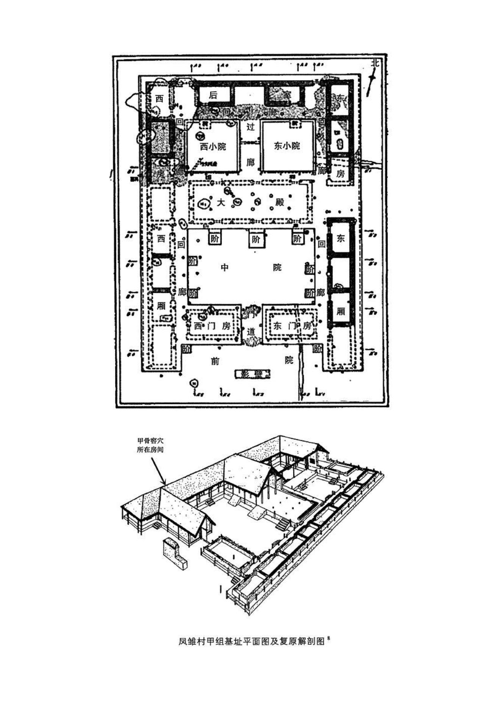
原书阅读器页 347原书物理 PDF 页 345印刷页 333
相比之下，商朝建筑很不一样。殷都时代的商朝，王宫区建筑多采用分散的单排结构，彼此间很少围拢，呈现出不重视防御和隐私的自信。普通商人贵族的院落，多是完全围拢起的“回”字形布局，犹如一座全封闭的碉楼。文王大宅则更接近后世的“四合院”。
文王这座宅院似乎很阔大，但因多数房屋开间都比较小，若亲临实地，还是会让人觉得有些局促。考虑到文王有至少十几个儿子，算上女儿的话应该会有30人左右，再加上不止一位夫人以及家仆，这座宅院很难容纳。这样看来，成年的孩子可能另有住处。
经碳十四测年，凤雏村甲组基址（文王大宅）的建筑时间为公元前1095年（误差范围±90年）。从这个年代值看，它建成于周灭商之前半个世纪，当时的文王刚接近成年，或者说，这座宅院是为他的婚事准备的，而周族灭商的事业也将从这里萌芽。
地下工作室
表面上看，文王大宅只是一位西土酋长的体面院落而已，但在不起眼的西厢房，南起第二间，还埋藏着更深的秘密。
从这间厢房的墙壁下挖出了两座窖穴，较大的H11（1.55米×1米）在屋子东南角，底部逐渐增大，堪称一座微型地窖。向下挖了1.9米，挖穿了1米多厚的夯土台基，然后朝东西两边扩展出一段，形成了一个底部长3米，宽1米，向上逐渐收拢的扁瓶形空间。
对周人而言，这种地下室生活方式不算陌生，在豳地一碾子坡时，他们就主要居住在窑洞或窖穴里。不过，文王在世时，这座微型地窖应该有木制的梯子供人上下，入口可能有木地板或家具提供隐蔽遮挡，是专属于主人的密室。
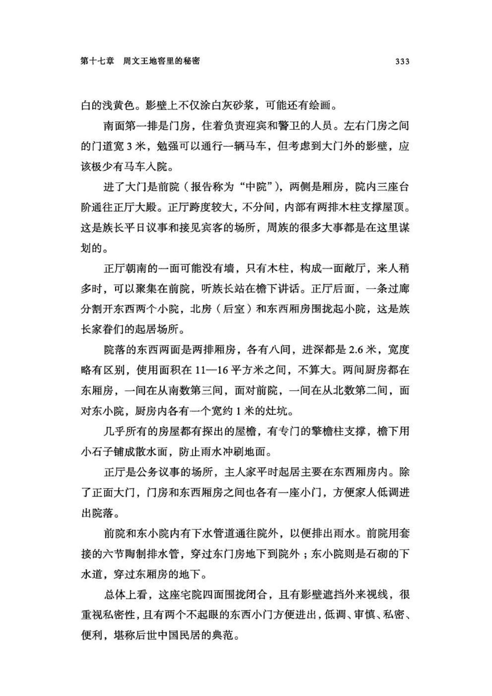
原书阅读器页 348原书物理 PDF 页 346印刷页 334
H11地窖中存储的不是普通物资，而是用来占卜的甲骨，一共发掘出1.7万多片，绝大多数是龟甲，但都是散碎的小块。这些残碎龟甲中，刻字的只有282片。
H11窖穴平面与剖面图（图）
H11与H31窖穴的位置（图）
当然，这座地窖不仅是甲骨储藏室，也是秘密工作室。它的北边土壁上凿出了一个床头柜大小的壁龛，距离地窖底面40厘米，构成一个简易工作台：把油灯放在壁龛里，席地而坐，就可以趴在壁龛里占卜或镌刻甲骨文字。
第二座窖穴H31紧贴北墙，更为隐蔽，初次发掘的时候并没能发现。这座窖穴直径约1米，深约1.6米，只是储物而不能容人。里面保存的甲骨很少，有数片刻有卜辞。
考古学者多认为，这座凤雏村甲组基址是周族人的宗庙，依据的是后来《周礼》中“藏龟于庙”的说法。但在周昌时代，周族还没有这种严格的礼制，甚至西周中期的垃圾坑里也还是会发现占卜后的甲骨，所以《周礼》的说法并不符合先周和西周的实际。
而且，宗庙是公共建筑，需要有较大的公共空间，但凤雏村甲组建筑则不同，它的正厅和庭院都不大，而且大门前还有一堵影壁。这都是居家宅院的特征，至少在使用初期，这座建筑就是周昌的家宅。
而比地窖更隐秘和难以解释的，是里面收藏的甲骨。
在殷都，商王都是在整面的牛肩胛骨或龟甲上占卜刻辞，但在文王大宅的两座地窖里，刻字甲骨都是小碎块，刻痕比蚊子腿还细，文字极为细小，小得像粟米粒，必须借助高倍放大镜才能看清楚：多数文字只有1毫米见方，一片拇指盖大小的甲骨就可以刻写20多个字。
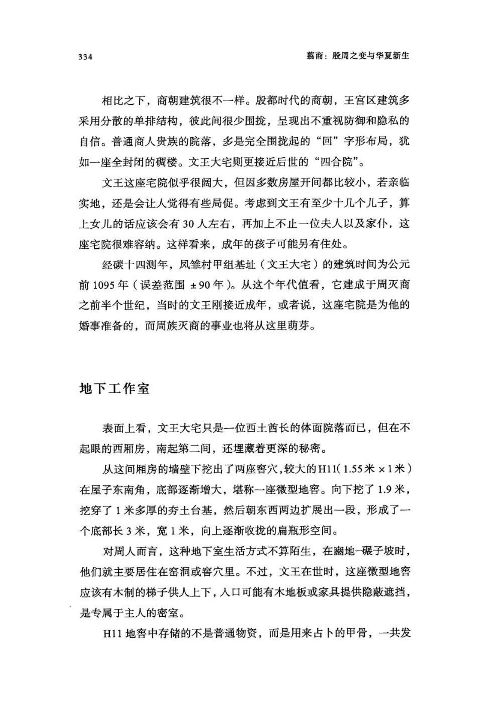
原书阅读器页 349原书物理 PDF 页 347印刷页 335
在最初发掘时，考古队并未识别出这些刻字甲骨，以为它们只是混杂在泥土中的细碎骨片而已。这种细微的文字难以拓印，所以周原甲骨文都是放大的照片，或者由整理者对着放大镜临摹下来。
为什么要把卜辞刻得如此细微？李学勤先生认为：“甲骨字刻得小如粟米，便是为了把辞局限在相关的兆旁边，不与其他的兆相混。”[[fn:9]] 意思是说，必须在烫出的裂纹范围内刻字。不过，从这些甲骨残片看，刻字的空间是充足的，大量残片都是空白，而且，殷墟的甲骨卜辞也都不存在这个问题。所以，我们可能还是要从周昌所处的现实环境寻找答案。
实际上，周昌要做的事情，是秘密学习商王的通神占卜之术。而这在商朝过于僭越，而且后来周昌又萌生了翦商造反的念头，就更是大逆不道，超出所有人的想象力。一旦这个阴谋泄露，不仅自己在劫难逃，整个周族也会陪着他一起殉葬。
所以，周昌必须保密。为此，他把自己关在不起眼的西厢房，躲进暗无天日的地窖，做各种占卜推演和刻字，而且故意把文字刻得很细微。毕竟，这是文王最为隐秘的事业。
沉迷占卜算命的人，大都信仰各种超自然能力和现象，包括那些神异的传说。根据商人传说，玄鸟（燕子）是商王的祖先。在《易经》里，有“飞鸟以凶”和“飞鸟遗之音”之类的说法。也就是说，周昌已经注意到飞鸟会给敌人传递信息，他应该是认为，倘若燕子发现自己的秘密，就会报告给商纣王。而燕子喜欢在屋檐下或屋梁上做巢。所以，为了躲开这些随时飞来的耳目，周昌只能躲进地窖，盖严木板，点起油灯。
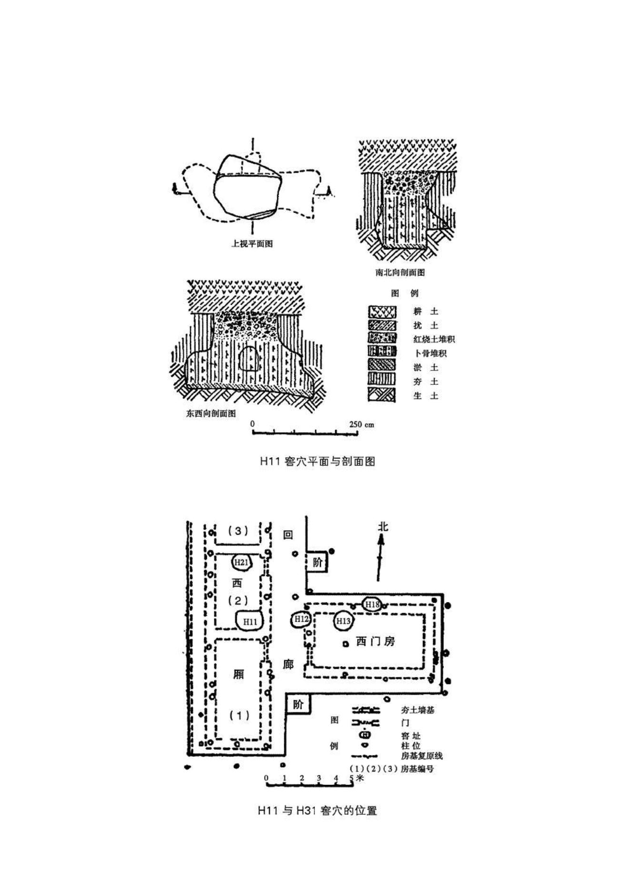
原书阅读器页 350原书物理 PDF 页 348印刷页 336
文王微雕卜辞的记录
周昌礼贤下士的故事背后，其实是他在努力刺探商朝的信息，而商王家的占卜技术是他关注的重点。传世文献虽不会描写这些内容，但考古可以给我们提供另一种完全不同的认知。
周昌需要完成向商朝缴纳人牲的工作，所以他很关心如何捕猎俘虏。西厢房地窖的甲骨刻辞中，有一条（H31：3）是占卜到哪里能俘获人的。这条的释文是“八月辛卯卜曰：其梦启；往西，亡咎，获其五十人？ ”[[fn:10]] 大意是，八月辛卯日占卜，做梦得到启示，往西方没有灾祸，能捕获五十个人吗？[[fn:11]]
五十人是殷墟甲骨中常用的献祭人数。武丁王和武乙王亲征的时代已经成为过去，对如今的商朝而言，人牲主要靠周这种附庸小邦来提供。为此，周昌应该很紧张：为完成商王下达的任务，他必须想尽一切办法寻找预测手段，就连做梦的启示和甲骨占卜都用上了。
有些甲骨卜辞就更是奇怪，内容竟是祭祀商朝先王，特别是最晚近的文丁和帝乙，也即纣王的祖父和父亲。祭祀的形式也完全是商式的，不仅使用牛、羊、猪，还使用人牲。
甲骨H11:1记载，癸巳日占卜如何祭祀“文武帝乙宗”（纣王父亲帝乙的宗庙），同时占卜是否适合一起祭祀成唐（成汤，商朝开国之王，生日也是乙日），方式则是“报”祭（可能是在大鼎里煮熟）两名女子，还有猪和羊各三头，用血献祭。
甲骨H11:112记载，准备第二天（乙酉日）彝祭“文武丁”（纣王祖父文丁），因为刻字磨损，用的祭品不详，方式是“裂”（肢解）；还有“卯”（对半剖开）。
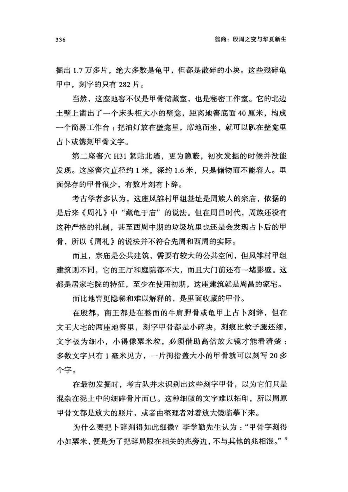
原书阅读器页 351原书物理 PDF 页 349印刷页 337
那么，周文王为何要祭祀商王的先祖？这是个很难回答的问题。
其一，按照当时人的观念，神灵有选择祭品的能力，商王的先祖肯定不会享用周这种蛮夷小邦奉献的祭品。而且，周人也不可能公然给商王的先祖建立神庙，在当时，这属于悖谬和僭越之举，消息一旦传到商朝，会给周人招来杀身之祸。
其二，无论史书还是考古，都没有发现周人有人祭的记录。文王大宅内外从未发现有人奠基和人祭现象，垃圾坑里也没有抛散的人骨，整个周原都是如此。
其三，文王大宅地窖里的卜辞用的都是非常细微的刻痕，和殷墟甲骨很不同，所以这两片甲骨也不会是从殷都（商人）那里带来的。
也许，这是文王有机会去殷都时，偷偷地观察和学习了商人占卜和祭祀的全过程，回到周原后模仿商人的做法刻写的卜辞。
倘若真是如此，那他为何要这样做？今人已经无法找到标准答案，因为占卜预测和祭祀本身就是非理性的产物。而且，周昌对此还有一种异乎寻常的兴趣和探索精神，他不仅学习商人的甲骨占卜，还改造了易卦预测技术，创作了《易经》文本。
有些学者认为，文王大宅地窖里的甲骨含有更晚的内容，如周武王时期以及西周初期的成王和康王的卜辞。但这些卜辞数量很少，更缺乏直接证据：对周朝来说，灭商是最为重大的历史事件，不仅没有内容相关的卜辞，也没有后世子孙祭祀周文王的卜辞。
要知道，周昌在去世前才把都城搬到了丰京（今西安市西郊）；之后不久，武王就开始建设镐京，灭亡了商朝。也就是说，到这时，周原的文王大宅才变成王室家庙和周文王的纪念馆。结果，到西周末年，整座建筑毁于一场大火（坍塌的土墙和屋顶残块呈现火烧后的破红色），甲骨因保存在地窖里，才侥幸躲过火焚。
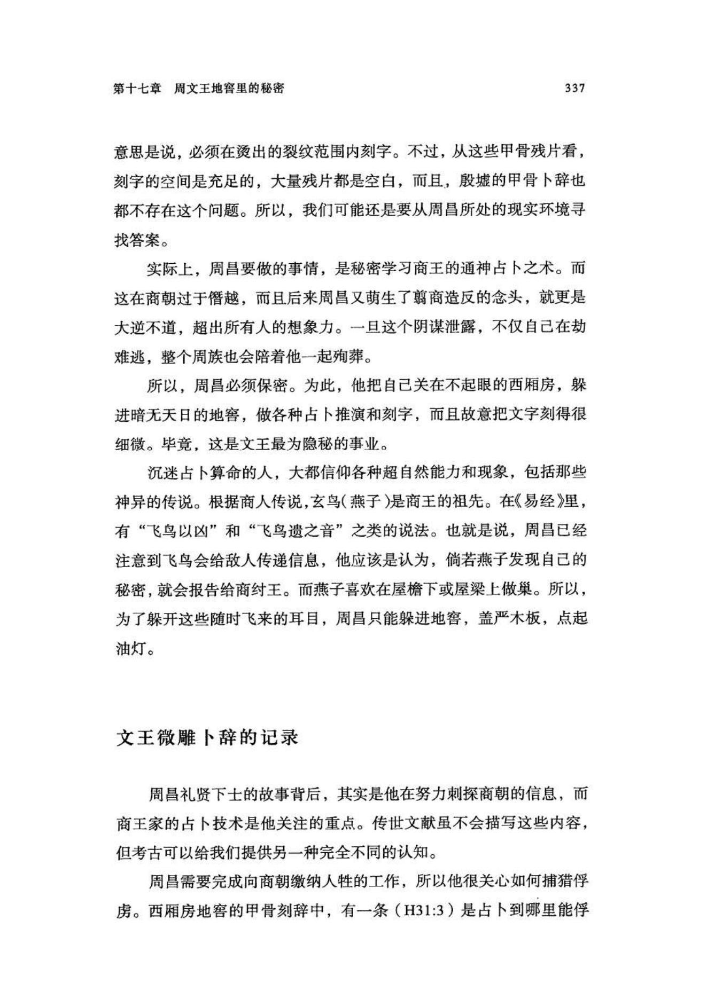
原书阅读器页 352原书物理 PDF 页 350印刷页 338
保留在文王大宅甲骨上的文字，总量并不太多，且过于零星，但周文王另有一部传世著作《易经》，其包含的周人早期历史更多，只不过，需要新的解读方式，方能还原部分真相。
注释
1《史记•殷本纪》。另《史记正义》引《括地志》说，“古莘国在汴州陈留县东五里，故莘城是也”。其地在今河南省中部，接近商文化核心区，离夏都二里头也不太远，所以这个说法比陕西合阳说更可取。
2古史中关于周昌父子年龄的记载多不可靠，比如说周昌活了九十多岁、他十五岁开始生子，等等。这种说法可能来自对《尚书•无逸》的误读，因周公说“文王受命惟中身，厥享国五十年”，后人便错误地理解为文王“受命”担任商族族长后又活了五十年。其实“受命”是指文王决心反商和称王，而“享国”是指他担任周族族长。“受命”发生在周昌从殷都获释之后，之后数年他就去世了。
3《史记•燕召公世家》没有记载召公奭的世系，只说他“与周同姓，姓姬氏”。皇甫谧《帝王世纪》说召公是“文王庶子”，即大姒之外的妾所生，但此说不确，因为召公家族又被称为召伯，周人的“伯”必须是嫡长子。
4陈梦家：《殷虚卜辞综述》，科学出版社，1956年，第287页。
5西周初有“厦侯旨鼎”，铭文有“厦侯旨初见事于宗周，王赏旨贝廿朋，用作姒尊彝”。这位愿侯旨是召公奭的儿子或孙子，被册封为燕（厦）侯，在获得周王的赏赐之后，为祭祀母亲或祖母“姒”铸造了铜鼎——这位“姒”很可能是和大姒一起嫁到周族的姐妹。召公家族其他铜器还提到有一位“父辛”，虽不能确认是谁，但由此可见，召公家族一定程度上已经商化。参见曹斌等《厦侯铜器与燕国早期世系》，《江汉考古》2016年第5期。
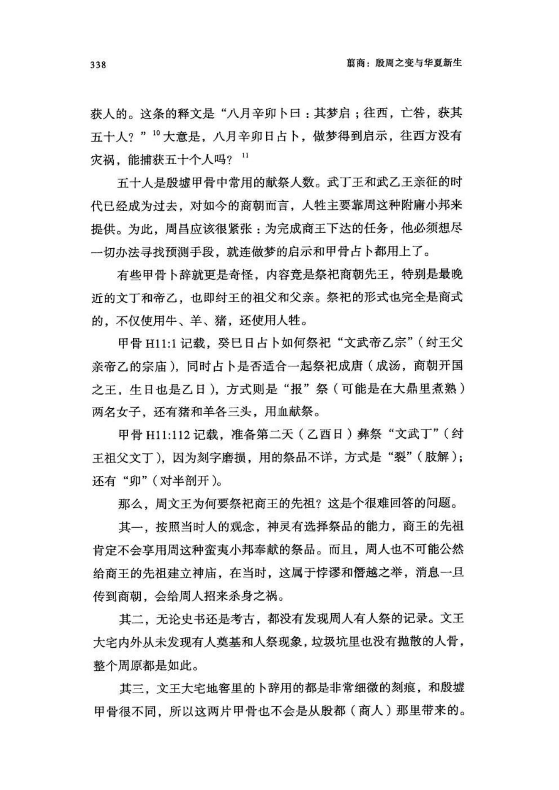
原书阅读器页 353原书物理 PDF 页 351印刷页 339
6史书和甲骨卜辞中都没有商王在位的具体年数，这是“夏商周断代工程”构拟的时间。参见胡厚宣、胡振宇《殷商史》，第630页。
7陕西周原考古队：《陕西岐山凤雏村西周建筑基址发掘简报》，《文物》1979年第10期。以下凡该基址的基本信息、数据及图片，未注明出处的，皆出自该书，不再详注。
8平面图改绘自陈全方《周原与周文化》，上海人民出版社，1988年。原图绘制较早，当时还没有发现西厢房内的H31窖穴。复原图摘自杨鸿勋《宫殿考古通论》，紫禁城出版社，2009年。
9李学勤：《西周甲骨的几点研究》，《文物》1981年第9期。
10陈全方：《周原与周文化》，第110页，图版第64页；徐锡台：《周原甲骨文综述》，三秦出版社，1987年，第114页。
11“西”字，陈全方释为“兹”，徐锡台释为“是”，都是指示代词。“获”字，徐锡台认为该字左边是“舟”部，释为“般”；但摹本显示是鸟形的“隹”，应从陈全方释为“获”。[[editor-fn:1]]
〔编者注1〕这一章生字少。
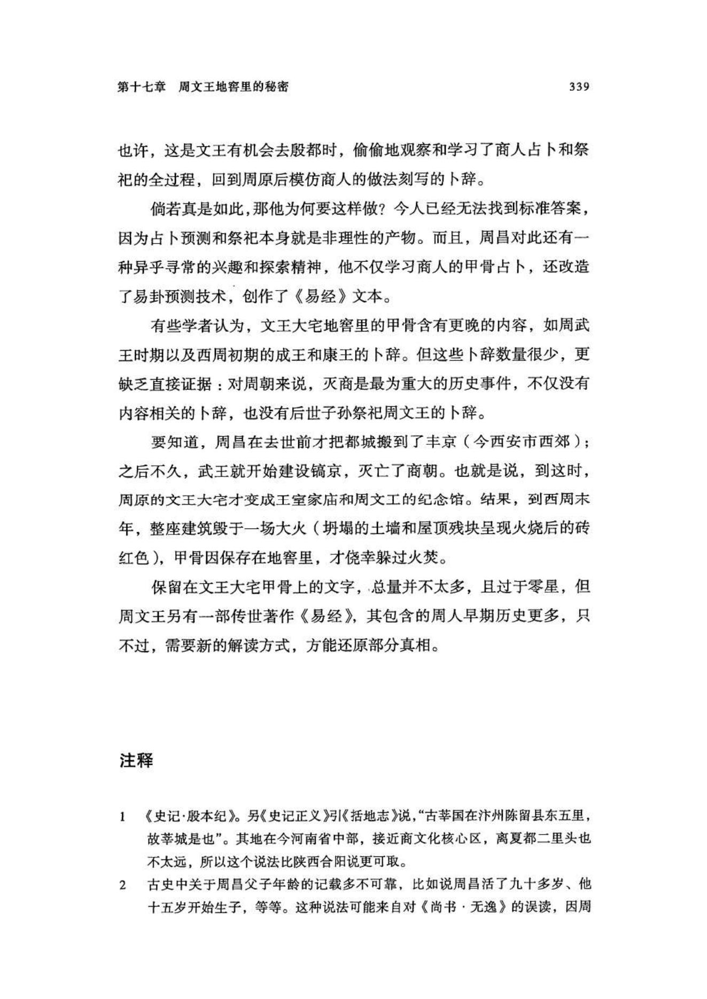
原书阅读器页 354原书物理 PDF 页 352印刷页 340
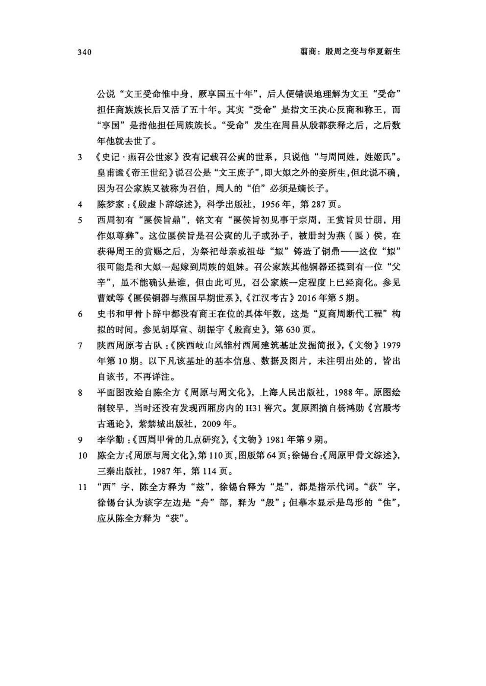
编辑札记
标记
先在正文中选择文字，再输入拼音；可用“拼音；简注”。